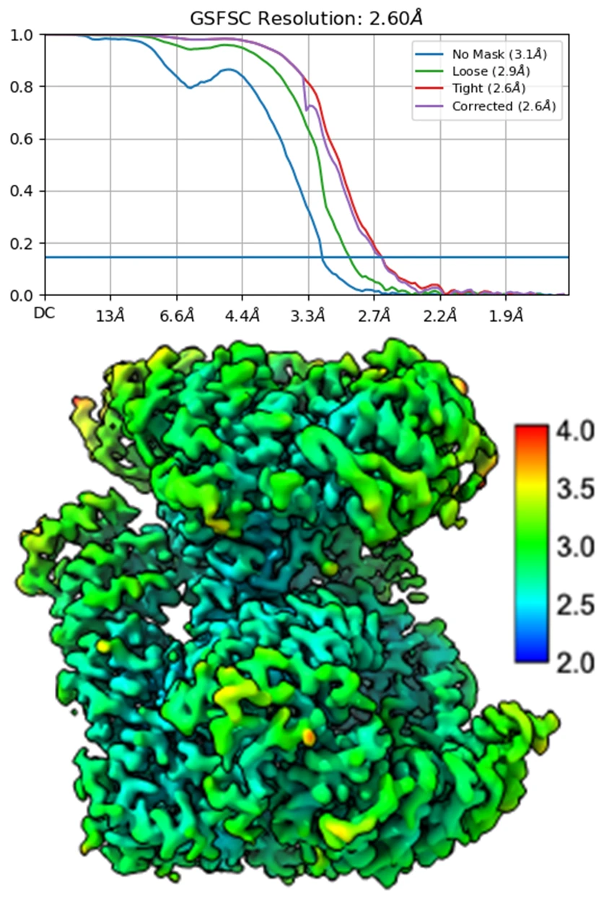
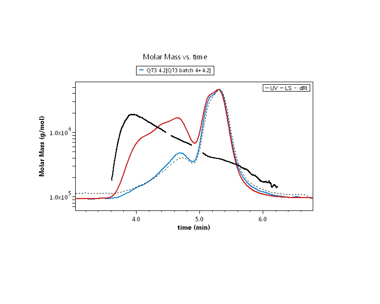

Context
Huntingtin (HTT) is a large, difficult-to-produce protein central to Huntington's disease research. Curia's drug-discovery group worked with CHDI Foundation to supply high-quality HTT and enable structural and screening studies.
I improved the purification protocol, moving the sample from roughly 60–65% monomer to 98.3% monomer, and contributed to the cryo-EM structure of the HTT/HAP40 complex with a bound drug-like ligand.
What I did
- Redesigned the HTT purification workflow to improve monomer purity and stability.
- Implemented QC and characterization to support reproducible production.
- Contributed to cryo-EM sample preparation and structure determination of HTT/HAP40.
- Worked with CHDI and Curia stakeholders on ligand-bound complex analysis.
Key results
- Monomer purity
- 98.3%Improved from 60–65%
- Structure resolution
- 2.6 ÅHTT/HAP40/ligand cryo-EM
- Institutes supplied
- 15+High-quality HTT
- The improved protocol produced 98.3% monomer HTT, up from 60–65%.
- The HTT/HAP40/ligand structure was determined at 2.6 Å by cryo-EM.
- Curia became the only global commercial provider of high-quality HTT, supplying 15+ institutes and pharmaceutical companies.
- The ligand complex revealed a binding pocket at the HTT/HAP40 interface and a +1.7 °C thermal shift.
“At Curia, Yuanzhang Zheng has played a critical role in advancing the technology to produce and stabilize this important protein.”
“There are very few scientists like Yuanzhang who have the expertise and talent to make such an immediate impact in this research field.”
Figures


Collaborators
Output
No public artifact for this project yet. Summary adapted from the research presentation.